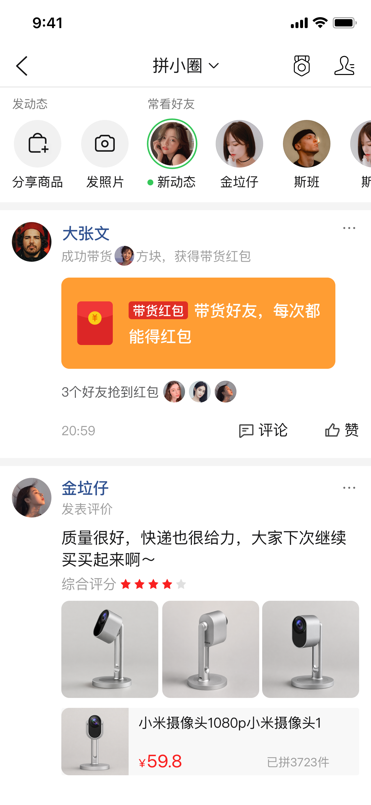
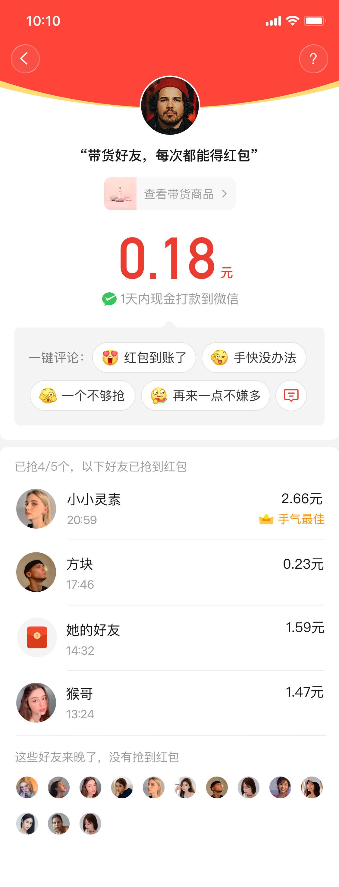
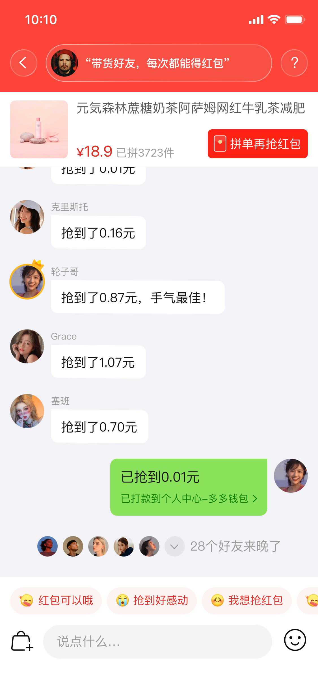
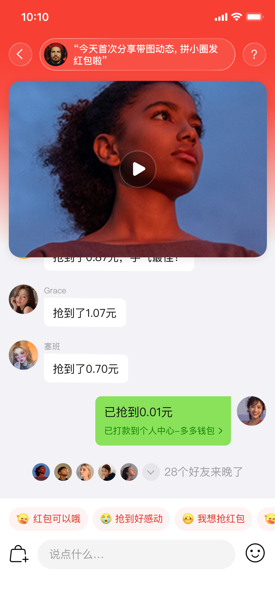

拼
拼小圈 · 增长设计
让一只红包，走进真实关系里。
从带货互动出发，连接动态、聊天与内容消费。
01 / 场景入口
红包进入用户的日常动态。
带货行为不再只是一次分享，而是好友可以自然参与的社交事件。

01
02 / 核心结果
一次结果，带来下一次互动。
金额、好友反馈与一键评论在同一页面完成闭环。

02
03 / 状态设计
错过，也能自然留在对话里。
即使红包抢完，评论入口和好友结果仍然延续互动。
03
04 / 社交延展
红包回到聊天现场。
实时结果、商品入口和快捷表达，让参与感持续发生。

04
05 / 内容扩展
同一套机制，覆盖更多内容场景。
从商品到视频，红包成为内容消费与好友关系之间的连接。

05
拼小圈红包增长设计
让互动，成为消费与关系之间的连接。
Interaction · Growth · Social Commerce